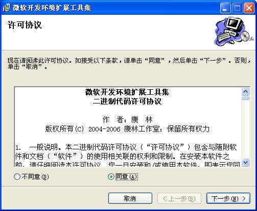
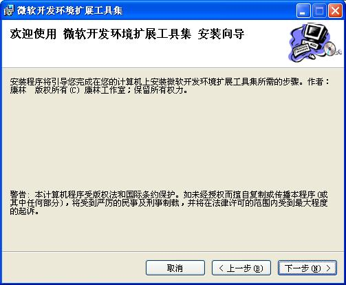
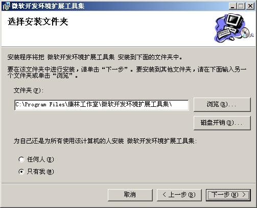
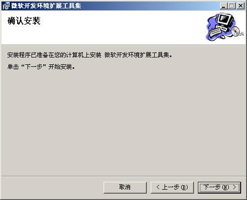
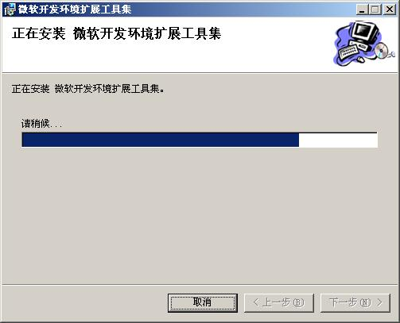
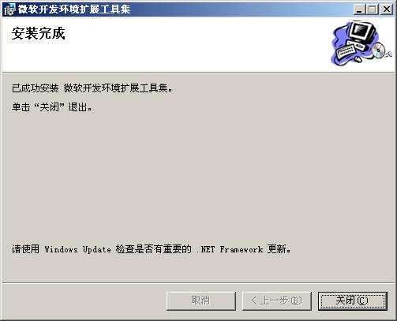
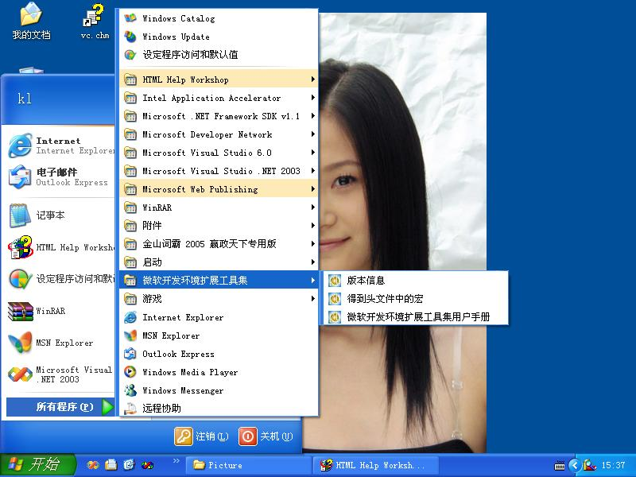
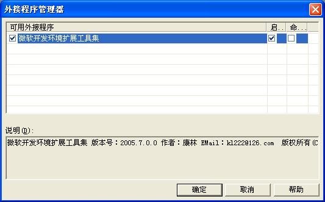

安装
卸载以前安装的本程序。如果从未安装过本程序，这步可以跳过。
安装程序






安装完成后,在开始菜单->程序中加入了 微软开发环境扩展工具集项：

启动 Microsoft Visual Studio .Net 2003,在菜单“工具->外接程序管理器”中 已经选择“微软开发环境扩展工具集”。

如果你用的是 7.0 的版本（VS.NET 2001)的话，可能要把下面键值：HKEY_LOCAL_MACHINE\SoftWare\Microsoft\VisualStudio\7.1 \AddIns\VisualStudioNetExtendTools.Connect 中的 7.1 改为 7.0 （这个本人未测试。如果你是这种情况，是否正确，请试过后告诉本人。）
如果你用的是8.0的版本(VS.NET 2005)的话,安装程序已自动建立了键值。
下一步